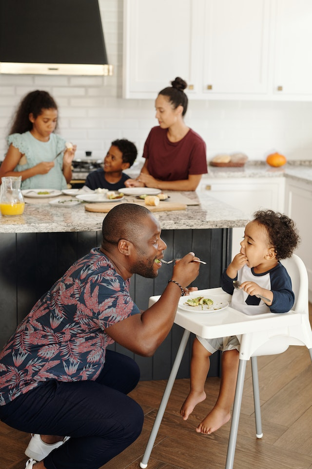

Autismo e síndrome de Down
A alimentação é um assunto delicado e uma queixa frequente de famílias de crianças autistas, com TDAH ou com síndrome de Down. Além da preocupação com deficiências nutricionais, o momento da refeição pode se tornar estressante.
Essas dificuldades na alimentação podem envolver estímulos sensoriais, entre outros fatores. O acompanhamento nutricional busca:
- Acompanhar as famílias de crianças que apresentam recusa alimentar;
- Oferecer suporte nutricional;
- Apresentar e incluir novos alimentos na rotina da criança;
- Ampliar o cardápio de forma individualizada.